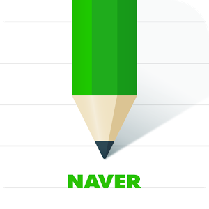
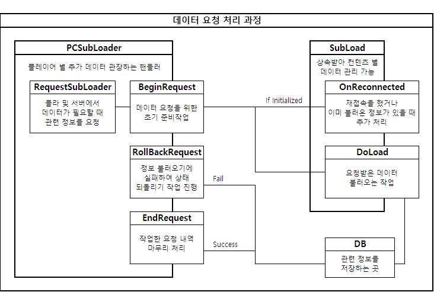
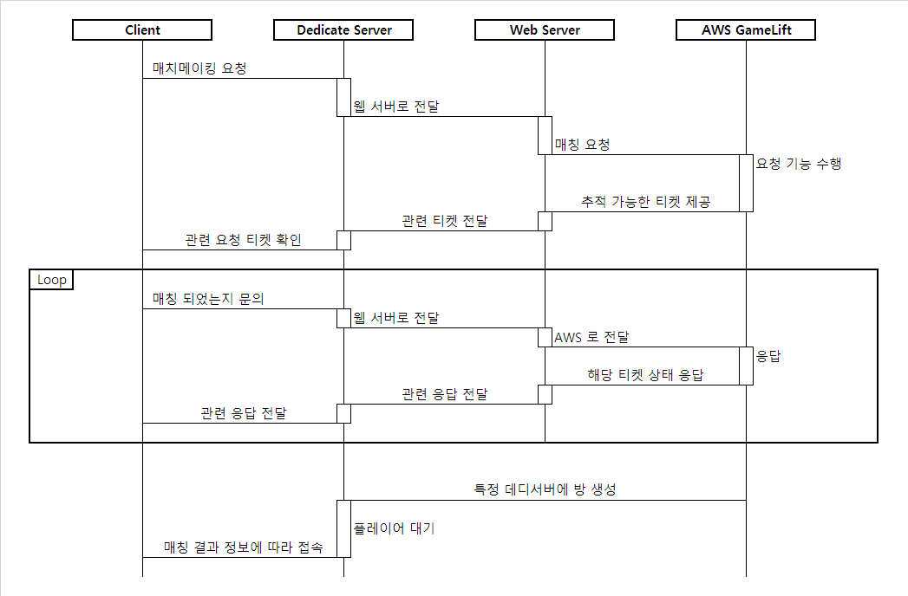

자기소개


인사말
안녕하세요! 만나서 반갑습니다! 김형준 입니다!
관심을 갖고 찾아와 주셔서, 먼저 감사의 말씀드립니다.
이 소개 페이지는 웹 기능 공부도 하고, 제 소개 페이지도 만들어 보고 싶어서 가벼운 마음으로 만들게 되었습니다. 자기소개서 같은 양식으로는 칸이 작아 설명하기 난해하거나, 정해진 주제들이 있다보니 모든 것을 담을 수 없었던게 아쉬웠고, 이참에 새로 만들고자 했던 생각에 웹 페이지에 자기소개 형식을 만들게 되었습니다.
부족한 부분이 많이 보이 실 수 있지만 예쁘게 봐주시면 감사드립니다.
이 웹 페이지는 bootstrap과 html5, javascript 를 통해서 구현되었습니다.
프로그래밍을 처음 접했던 시점
군대에서 일이병 때는 현장직이었고, 상병장 때는 변전소에서 엑셀 계산하는 행정직으로 근무하였었습니다. 당시에 모든 엑셀 계산이 수작업이었고, 상수도 요금, 전기 요금들을 모두 다 전 부대 지역별 구간별 계산을 통해 금액을 확인하는 작업을 했었습니다. 단순 노동 작업이었는데 시간은 너무 오래 걸리고 효율이 매우 떨어지다 보니, 한달 요금 계산이지만, 요금 계산이 끝나는 시점 부터 다음 달 요금 계산을 준비해야 했었습니다.
당연히 반복 작업이라 무언가 컴퓨터로 자동화를 시키면 훨씬 군생활을 편하게 할 수 있을 것 같았고, 결국 VBA 라는 기능을 통해 F1 도움말 하나 가지고 겨우겨우 자동화를 시켜두었습니다. VBA 를 익힌 이후 부터는 간단한 스도쿠 게임이나 간단한 게임들을 만들면서 군생활을 쉽게 보낼 여유가 생기게 되었고, 이로 인해 처음 프로그래밍이라는걸 모른채 구현을 해본 첫 경험이었습니다.
진짜 프로그래머의 시작
군대 전역 후, 무슨 일을 하고 싶은지 고민을 하다가, 제가 좋아하는 게임 쪽으로 꿈을 펼치고 싶었습니다. 그래서 처음 게임 QA 직군으로 게임업계에 처음 발을 딛게되었습니다. 약 2년 정도 QA 관련 일을 하다보니 직접 게임을 만들고 싶어졌고, 직접 게임을 만들기 위해서는 프로그래밍을 배워야 겠다는 생각이 들어서, 한국산업기술대학교의 게임공학과로 편입을 하게 되었습니다.
학교 생활
전공과 관련 없이 처음 프로그래밍 학과를 3학년으로 편입했더니, 상당한 고난의 연속이었습니다. 자료구조와 C언어 수업을 동시에 수강해 가면서 프로그래밍에 익숙해지기란 많이 어려웠습니다. 하필 자료구조 수업도 엄청나게 많은 실습과제와 수업 시간 한도 내에 주어진 과제를 모두 해결해야만 점수를 받을 수 있는.. 소위말하는 '빡센 실습형 수업' 을 처음부터 듣게되다보니, 기본이 부족했던 저는 항상 밤을 새기 일 수 였습니다. 재학생도 절반이나 F를 받는다는 F폭격기 교수님 수업이었지만, 제 스스로 꼭 해내고 싶었고, 수능보다 더 깊은 열정으로 공부하여 결국 성공적으로 수업을 마무리 했던 기억이 있습니다. 사실상 언어 자체를 처음 접했던 저로서는 독학으로 모든걸 해결할 수 밖에 없었지만, 그 때 당시의 프로그래밍 학습 습관이 잘 다져졌기에 지금 이렇게 프로그래밍 실력을 쌓을 수 있었던 토대가 되지 않았나 싶습니다. 열심히 공부한 덕분에 졸업할 때는 최우수 졸업작품으로 교내 대회 중소기업장상을 받으며 졸업할 수 있을 정도로 큰 발전이 있었습니다.
왜 서버인가?
게임을 개발하고 싶어서 대학교를 지원했는데, 정작 현재는 서버 프로그래머로 활동을 하고 있습니다. 그렇게 된 이유는 또 남다른 재미난 사연이 있습니다. 위에서 언급 한 것 처럼 1학기를 겨우 겨우 마무리를 하고 나니 2학기에는 그래픽스 수업과 네트워크 수업을 택해서 들어야 하는 상황이었습니다. 역시나 자료구조와 C언어 수업만을 가지고는 새까만 콘솔창 말고는 아는게 없었던 저로서는 그래픽스 수업보단 네트워크 수업이 조금 더 친숙했기에, 사실상 어쩔 수 없이 두려운 감정에 의해 네트워크 수업을 택해서 듣게 되었습니다.
재밌었던 점은 네트워크 수업은 재미없고 어려울 것 같았지만, 원격으로 파일을 전송하며 주고 받고 눈에 보이지 않는 기능들을 직접 구현하여 테스트 하는 또 다른 즐거움을 발견하게 되었습니다. 이 때부터 생각이 조금씩 바뀌기 시작한 시점이라 생각이 듭니다. 게임도 좋지만 프로그래밍 자체가 재밌어졌고, 프로그래밍으로 익히고 성장해 나가는 제 스스로가 좋아지다보니 특별히 게임에 한 해 국한되지 않고 더 넓은 성장과 사고력을 갖게 되었습니다. 오히려 그래픽스에 한정된 클라이언트 지식보다는 다양한 확장력을 익히기 위해선 서버가 훨씬 매력적으로 다가오게 되었습니다. 그러다 보니 그 이후로 특별히 진로를 바꾸질 않았어서, 계속 서버 프로그래머로 활동하게 되었습니다.
조금 아쉬웠던 점이라면, 최근에는 그래픽스 수업도 들었다면 더 좋지 않았을까 하는 생각이 들다보니, 클라이언트나 게임 엔진 쪽으로도 관심이 가고 있습니다.
장단점
현재 지금도 스스로 부족한 부분이 많다는 것을 잘 알고 있고, 특히나 이론 부분도 많은 공부를 해야하며, 앞으로도 해야할 것들이 넘쳐나는걸 잘 알고 있습니다. 그렇기 때문에 특정 분야를 선도하는 최고 전문가가 되기에는 매우 어렵다는 것을 잘 알고 있습니다. 특히나 삼성 소프트웨어 멤버십에 합격하여 관련 친구들을 만났던 적이 있었는데, 거기 있던 친구들은 정말 실력적으로나 재능적으로나 훌륭한 친구들이 많았고, 훨씬 앞서서 프로그래밍을 시작한 친구들이 대부분이었습니다. 개인적으로 성장하면 성장할 수록 부족한 부분이 많다고 생각되는 저 이지만, 약간의 시간과 적응할 기간만 주어진다면 그 누구보다도 노력을 하여 최선의 결과를 만들어 낼 수 있다고 자신할 수 있습니다. 어느 일터에서 일을 알바부터 지금까지, 항상 최고의 업무 수행력을 보이려 노력하였고, 많은 주변 분들은 그 부분에 대해 결과적으로나, 과정적으로나 모두 만족하셨던것으로 생각됩니다. 언제나 저 스스로 완벽하지 않다는 것을 잘 알고 있기 때문에, 항상 겸손한 자세로, 스스로 검증하고, 부족한 점은 보완하고, 다시 한 번 재설계 하면서, 지금까지 성장하며 많은 것을 이루어 냈습니다. 앞으로도 더 많은 것을 이루어 내고 싶고, 제가 가진 꿈을 향해서 멈추지 않고 늘 성장하는 삶과 힘을 갖고 있다고 생각합니다.
꿈 및 목표
일확천금 부자되기!
로또 지르기, 주식, 코인 다 하는 중, 부동산은 몰라서 못해요. 알려줘요.
최고의 프로그래머 되기!
프로그래밍 실력을 쌓고 쌓아서 범접 할 수 없는 최고의 실력자가 되었으면 좋겠다는 꿈.
나만의 게임 만들기
원래는 이 모든 것의 시작 원인이, 나만의 게임을 만들고 싶어서 시작한 빌드업들..
기타 정보
| # | 주제 | 답 |
|---|---|---|
| 1 | 취미 | 게임하기, 피아노 연주 및 오케스트라 편곡 작곡 등 |
| 2 | 성격 | 살짝 내향적, 집돌이 (집이 제일 좋아요~!) |
| 3 | 음식 | 해산물 은 싫어요 ;ㅅ; (새우, 게, 굴, 젓갈 등등..), 예쁘고 잘생긴 음식만 먹어요~ |
| 4 | 이런건 안해요 | 술, 담배 |
경력소개
모아이게임즈
| # | 주제 | 정보 |
|---|---|---|
| 1 | 근무 기간 | 2017.08.07 ~ 2019.12.13 (약 2년 반) |
| 2 | 역할 | 서버 프로그래머 |
| 3 | 직위 | 사원 - 정규직 |
| 4 | 주 기술 | C++, IOCP |
| 5 | 부 기술 | C# (운영툴 내 컨텐츠 연동), MSSQL (기본 쿼리 및 프로시저 사용) |
| 6 | 개발 환경 | Windows Server 2012, Visual Studio 2017 |
| # | 주제 | 정보 |
|---|---|---|
| 1 | 근무 기간 | 2020.02.03 ~ 2020.05.01 (약 3개월) |
| 2 | 역할 | 서버 프로그래머 |
| 3 | 직위 | 사원 - 정규직 |
| 4 | 주 기술 | AWS GameLift, Flexmatch |
| 5 | 부 기술 | Typescript (운영툴 및 게임서버 작업), MYSQL (기본 쿼리 사용) |
| 6 | 개발 환경 | CentOS Linux Server, Visual Studio Code |
주 기술소개
IOCP, boost::asio
학부생 시절 IOCP 를 통한 서버 공부를 기반으로, IOCP 서버와 Boost::Asio 서버를 직접 제작해본 경험이 있습니다. 관련 내용을 잘 이해하고 있으며 실제 구현작업도 가능합니다. (관련코드 = IOCP, Asio)
C++
가장 메인이 되는 기술 입니다. 기본 클래스 및 STL 활용 및 템플릿, 매크로 활용 등에 대해 잘 이해하고 있습니다. 제일 좋아하는 언어이기도 해서 C++17, C++20 관련 최신 자료들에도 관심을 갖고 있습니다.
부 기술소개
C#
깊은 지식은 아니나, 기본적인 코드 작업에 있어서는 큰 무리 없이 작업 가능한 실력을 갖고 있습니다. System.Linq 를 활용한 기본 작업 정도 까지는 큰 무리없이 가능합니다. 운영툴 서버 내 컨텐츠 연동 기능 제작시에 사용했던 언어였으며, 개인적으로 작업할 때 많이 편했던 언어이기도 했었습니다.
Html5, javascript, bootstrap
현재 이 웹페이지를 제작할 정도의 지식 정도를 갖고 있으며, 간단한 게임도 구현할 수 있을 정도의 실력만 갖고 있습니다. 깊은 지식에 대한 이해까지는 아니나 코드 작업에 있어서는 큰 무리 없이 작업 가능합니다. 구현한 뱀게임
Python
깊은 지식은 아니나, 학부생 시절 간단하게 pico2d 라이브러리를 활용한 2d 게임을 만들어 봤던 경험이 있습니다. IWBTG게임
CentOS Linux Server
리눅스에 관한 깊은 지식은 까지 꿰뚫고 있지는 않습니다만, 서버 환경이 리눅스였던 경험이 있어서 기본 디렉토리 탐색이나 scp, ssh 기능등을 활용한 파일 실행 및 종료 관리 정도는 문제없이 사용가능합니다.
AWS GameLift
AWS 관련한 모든 기능을 심도 깊게 알고 있는것은 아니나, GameLift의 기본적인 개괄적 개념과 기능에 대해서는 이해하고 있습니다. GameLift 내의 Flexmatch 기능을 직접 연동해 보았으며, 실 컨텐츠 구현까지 하였었습니다. AWS CLI를 통해 빌드 생성, 플릿 배포 정도를 직접 담당하여 서버를 배포하는 작업했었고, 해당 플릿에 접속하여, 로그 확인 작업에 필요한 몇몇 일부 작업들도 해본 경험이 있습니다.
Azure
학부생 시절 졸업작품을 클라이언트 + 서버 조합으로 MMORPG 게임을 제출하여 교내 중소기업장상 탔던적이 있었습니다. 이때 남들과는 평범하지 않게 서버 구현을 하고 싶었었고, 이때 당시에는 이제 막 서비스 홍보를 시작했던 Azure 를 활용을 하여 Azure DB, Azure 서버를 활용해보았던 경험 정도가 있습니다.
실 구현 컨텐츠
업적


특정 행동에 대한 업적 진행도를 올려주거나, 달성한 업적에 대해 보상을 지급하는 컨텐츠를 구현하였었습니다. 업적의 경우 DB 부하를 줄이기 위해 LazyStore 라는 기능을 따로 구현하여, 1분마다 관련 정보들을 저장할 수 있도록 구현했습니다.
SubLoader

처음 플레이어가 서버에 접속 할 때, 플레이어와 관련한 모든 정보를 다 불러오는 구조였습니다. 하지만 처음부터 필요 없는 정보까지 모두 한꺼번에 불러오게 되는 경우를 가정해 봤을때, 동시에 많은 플레이어가 한 번에 접속하려고 시도하는 경우에는 상당히 큰 DB 부하가 발생할 수 있습니다. 따라서 지금 당장을 필요 없지만, 플레이어가 필요할 때 관련 정보를 그때 즉시 DB 조회를 할 수 있도록 보장하는 시스템을 구현하였었습니다. (예: 우편, 이벤트 정보 등등) 클라이언트에서 팝업창 같은걸 누를때 서버로 관련 정보 요청을 하고, 서버에서는 관련한 정보를 직접 들고 있는지 확인 후, 없을 경우 DB에서 해당 정보를 받아오며, 이미 있는 경우에는 메모리에 있는 정보를 건네주는 역할을 하는 구조 입니다. 이것을 SubLoader 로 명하고 해당 기능을 구현하였습니다.
AWS GameLift Flexmatch

클라이언트가 로비 서버에서 매치메이킹을 신청하면, 이를 웹서버로 전달하고, 웹서버는 AWS 에 기능을 요청하여 관련 유니크한 티켓 id 를 제공합니다. 클라이언트는 이 id 를 주기적으로 서버에 물어보고, AWS 는 해당 고유 티켓 id 를 기반으로 해당 티켓 상태에 대한 정보를 건네 줍니다. 매칭이 실제로 됐다면 특정 데디서버에 방을 생성하여 주고, 플레이어들은 티켓 상태에 대해 응답을 받고, 연결한 ip port player session id 정보들을 파싱하여 해당 위치로 접속을 시도한 후, 정상 접속 시 게임을 플레이하게 됩니다. 매치메이킹 상태에 따른 AWS SNS 푸시알림 기능을 활용해보려 했으나, 유료 추가 비용에 대한 부담으로 회사에서 거절하여 적용해보지는 못하였습니다.
기타 구현 내용
기억의 돌


현재 위치를 기억하고, 기억의 돌 소모하여 특정 위치로 이동하는 컨텐츠. 좌표를 즉시 DB에 저장하고, 아이템 사용 시 해당 저장 위치로 캐릭터 이동하는 기능.
칭호
칭호 지급 및 조건부 칭호 기능 구현, 칭호와 연동된 능력치 지급 기능 구현. 조건부 칭호의 경우, 매 시즌마다 초기화 되며, 다음 시즌 시 랭킹 별 보상으로 지급
출석 이벤트
매일 출석에 따라 스크립트에 입력된 보상 지급기능 구현 및 관련 정보 DB 기록
누적 접속 보상 이벤트
접속한 시간에 비례하여 스크립트에 입력된 보상 지급 기능 구현 및 관련 정보 DB 기록. 타이머를 통해 보상을 받을 수 있는 접속 시간이 되면 클라에 알림 발송
오늘의 활동
매일 해야 하는 과제를 완수하면 스크립트에 입력된 보상을 지급하는 컨텐츠. ActivityHandler를 상속받아 업적과 비슷한 프로세스로 처리. 진행했던 내용들은 다음날 모두 초기화 처리.
외형 변경권
캐릭터의 외모를 변경하는 티켓을 소모하여, 외형을 다시 만드는 기능.
특수 업적 (도전 과제)
특수한 상황에서 조건에 맞는 상황이 되어야, 진행도를 올려주는 컨텐츠. 샌드박스 형 조건 체크 기능 추가 구현 후, 기존 업적 시스템과 결합.